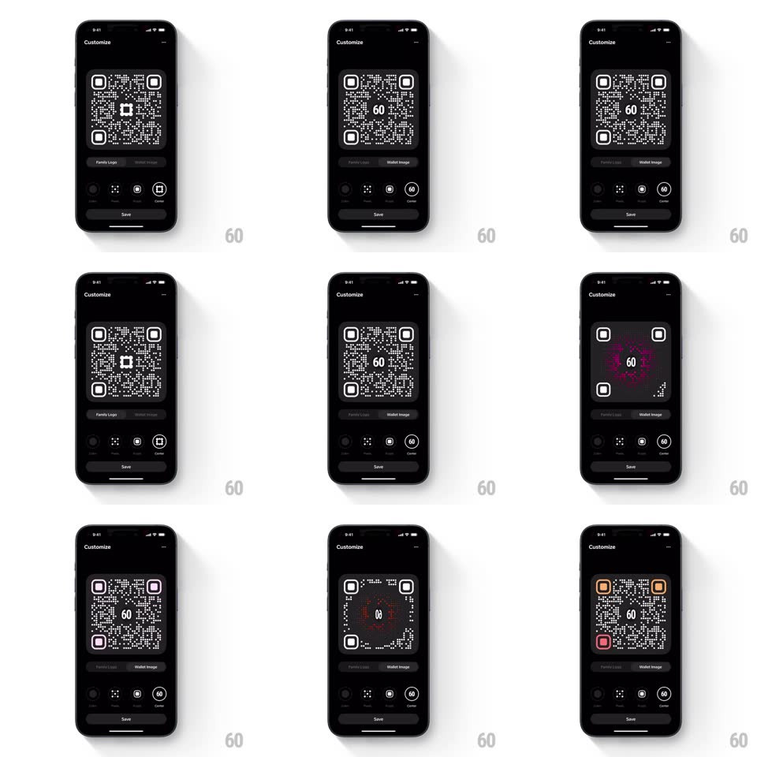

Media
Frame-by-frame

Rebuild this interaction 1:1: Family's QR logo color pulse - selecting a logo in the QR "Customize" screen sends an outward-propagating color pulse across the code: the new logo materializes at the center and its accent color radiates through the QR's finder squares and modules in a wave, settling into the new theme.

Rebuild this interaction 1:1: Family's QR logo color pulse - selecting a logo in the QR "Customize" screen sends an outward-propagating color pulse across the code: the new logo materializes at the center and its accent color radiates through the QR's finder squares and modules in a wave, settling into the new theme. ## Integration Integration: stack-agnostic spec - springs given as stiffness/damping, timed motions as duration + curve; map every value to your framework and animation library of choice. ## Scene Black "Customize" screen: large QR code preview with a center logo slot, a segmented control (Family Logo / Wallet Image), a row of customization tabs (Color / Pixels / Logo / Frame), Save button. ## Motion spec Pattern: selection-triggered radial color pulse. - Tap a logo option: the new logo pops into the center (scale 0.6 -> 1.1 -> 1, spring ~420/22, 280ms). - From the logo, a ring of the accent color expands across the QR (radius grows 0 -> full code, ~500ms, ease-out): modules it passes flash the accent hue and settle back to dark, and the three finder squares flip to the accent color as the ring reaches them (150ms crossfade each, in wave order). - After the wave, the finder squares hold the new accent and the logo idles with a soft glow pulse (opacity 0.6 -> 1, 1.8s loop, one cycle only). - The segmented control and tabs stay static. ## Calibration - The wave is a true radial expansion from the center - distance-ordered, not a global fade. - The finder squares change color exactly when the wave front reaches them - the timing sells the propagation. ## Reduced motion Logo crossfades in; finder squares change color together (200ms); no wave. ## Don't miss - The pulse originates from the logo, not the screen center or the code's corner. - Modules only flash - they never permanently take the accent color.